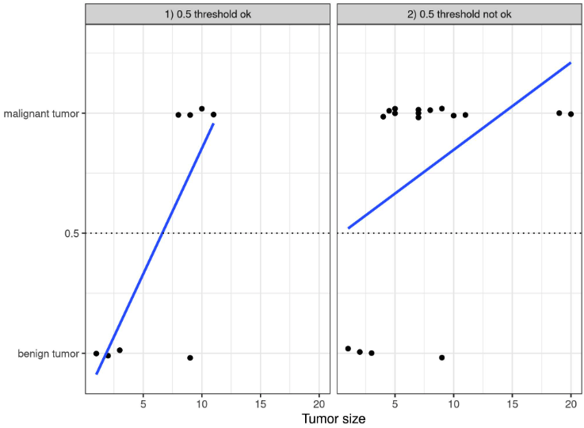
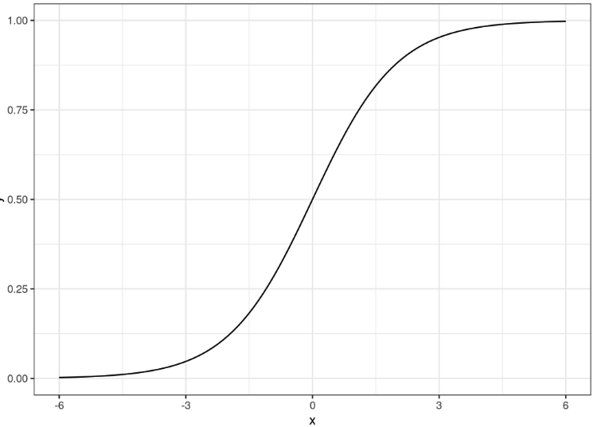
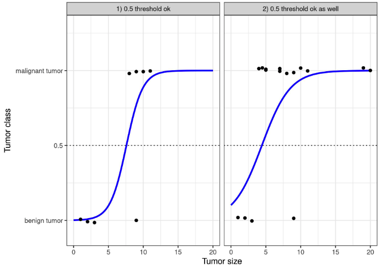
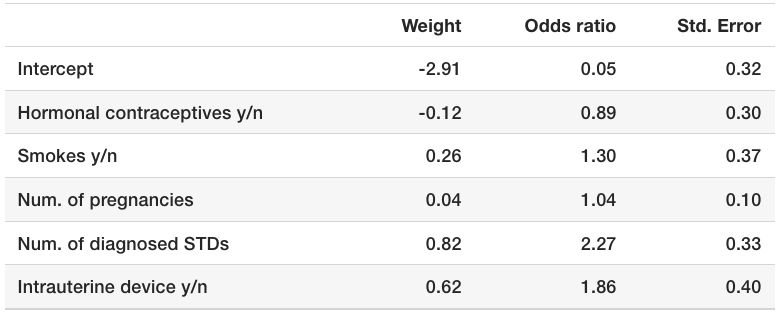

En cours de traduction.
5.2 - Régéression logistique
La régression logistique modélise les probabilités pour les problèmes de classification avec deux issues possibles. C’est une extension du modèle de régression linéaire pour les problèmes de classification.
Vous cherchez simplement l’interprétation correcte des modèles de régression logistique ? Économisez-vous du temps et des maux de tête (les log odds, ça vous dit quelque chose ?) et consultez ma feuille de triche pour l’interprétation de la régression logistique.
5.2.1 - Qu’est-ce qui ne va pas avec la régression linéaire pour la classification ?
Le modèle de régression linéaire peut bien fonctionner pour la régression, mais échoue pour la classification. Pourquoi est-ce le cas ? Dans le cas de deux classes, vous pourriez étiqueter l’une des classes avec 0 et l’autre avec 1 et utiliser la régression linéaire. Techniquement, cela fonctionne et la plupart des programmes de modèle linéaire vous donneront des poids. Mais il y a quelques problèmes avec cette approche :
Un modèle linéaire ne produit pas de probabilités, mais il traite les classes comme des nombres (0 et 1) et ajuste le meilleur hyperplan (pour une seule caractéristique, c’est une ligne) qui minimise les distances entre les points et l’hyperplan. Il interpole donc simplement entre les points, et vous ne pouvez pas l’interpréter comme des probabilités.
Un modèle linéaire extrapole également et vous donne des valeurs en dessous de zéro et au-dessus de un. C’est un bon signe qu’il pourrait y avoir une approche plus intelligente pour la classification.
Étant donné que le résultat prédit n’est pas une probabilité, mais une interpolation linéaire entre les points, il n’y a pas de seuil significatif auquel vous pouvez distinguer une classe de l’autre. Une bonne illustration de ce problème a été donnée sur Stackoverflow.
Les modèles linéaires ne s’étendent pas aux problèmes de classification avec plusieurs classes. Vous devriez commencer à étiqueter la classe suivante avec 2, puis 3, et ainsi de suite. Les classes pourraient ne pas avoir d’ordre significatif, mais le modèle linéaire forcerait une structure étrange sur la relation entre les caractéristiques et vos prédictions de classe. Plus la valeur d’une caractéristique avec un poids positif est élevée, plus elle contribue à la prédiction d’une classe avec un numéro plus élevé, même si les classes qui se trouvent avoir un numéro similaire ne sont pas plus proches que d’autres classes.

5.2.2 - Théorie
Une solution pour la classification est la régression logistique. Au lieu d’ajuster une ligne droite ou un hyperplan, le modèle de régression logistique utilise la fonction logistique pour compresser la sortie d’une équation linéaire entre 0 et 1. La fonction logistique est définie comme :
\[\text{logistic}(\eta)=\frac{1}{1+exp(-\eta)}\]
Et cela ressemble à :

Le passage de la régression linéaire à la régression logistique est assez direct. Dans le modèle de régression linéaire, nous avons modélisé la relation entre le résultat et les caractéristiques par une équation linéaire :
\[\hat{y}^{(i)} = \beta_{0} + \beta_{1}x^{(i)}_{1} + \ldots + \beta_{p}x^{(i)}_{p}\]
Pour la classification, nous préférons des probabilités entre 0 et 1, donc nous enveloppons le côté droit de l’équation dans la fonction logistique. Cela force la sortie à n’assumer que des valeurs entre 0 et 1.
\[P(y^{(i)} = 1) = \frac{1}{1 + \exp(-(\beta_{0} + \beta_{1}x^{(i)}_{1} + \ldots + \beta_{p}x^{(i)}_{p}))}\]
Revenons à l’exemple de la taille de la tumeur. Mais au lieu du modèle de régression linéaire, utilisons le modèle de régression logistique :

La classification fonctionne mieux avec la régression logistique et nous pouvons utiliser 0,5 comme seuil dans les deux cas. L’ajout de points supplémentaires n’affecte pas vraiment la courbe estimée de manière significative.
5.2.3 - Interpretation
L’interprétation des poids dans la régression logistique diffère de celle des poids dans la régression linéaire, car le résultat dans la régression logistique est une probabilité comprise entre 0 et 1. Les poids n’influencent plus la probabilité de manière linéaire. La somme pondérée est transformée par la fonction logistique en une probabilité. Par conséquent, nous devons reformuler l’équation pour l’interprétation de sorte que seul le terme linéaire se trouve du côté droit de la formule.
\[ln\left(\frac{P(y=1)}{1-P(y=1)}\right)=log\left(\frac{P(y=1)}{P(y=0)}\right)=\beta_{0}+\beta_{1}x_{1}+\ldots+\beta_{p}x_{p}\]
Nous appelons le terme dans la fonction ln() les “odds” (probabilité de l’événement divisée par la probabilité de non-événement) et enveloppé dans le logarithme, cela s’appelle log odds (logarithme des odds).
Cette formule montre que le modèle de régression logistique est un modèle linéaire pour les log odds. Super ! Cela ne semble pas utile ! Avec un peu de réarrangement des termes, vous pouvez déterminer comment la prédiction change lorsqu’une des caractéristiques (x_j) est modifiée d’une unité. Pour ce faire, nous pouvons d’abord appliquer la fonction exp() des deux côtés de l’équation :
\[\frac{P(y=1)}{1-P(y=1)}=odds=exp\left(\beta_{0}+\beta_{1}x_{1}+\ldots+\beta_{p}x_{p}\right)\]
Ensuite, nous comparons ce qui se passe lorsque nous augmentons l’une des valeurs des caractéristiques de 1. Mais au lieu de regarder la différence, nous examinons le rapport des deux prédictions :
\[\frac{odds_{x_j+1}}{odds{x_j}}=\frac{exp\left(\beta_{0}+\beta_{1}x_{1}+\ldots+\beta_{j}(x_{j}+1)+\ldots+\beta_{p}x_{p}\right)}{exp\left(\beta_{0}+\beta_{1}x_{1}+\ldots+\beta_{j}x_{j}+\ldots+\beta_{p}x_{p}\right)}\]
Nous appliquons la règle suivante :
\[\frac{exp(a)}{exp(b)}=exp(a-b)\]
Et nous supprimons quelques termes :
\[\frac{odds_{x_j+1}}{odds{x_j}}=exp\left(\beta_{j}(x_{j}+1)-\beta_{j}x_{j}\right)=exp\left(\beta_j\right)\]
Revoir les formules
En fin de compte, nous avons quelque chose d’aussi simple que \(\exp()\) d’un poids de caractéristique. Un changement dans une caractéristique d’une unité change le rapport des odds (de manière multiplicative) par un facteur de \(\exp(\beta_j)\). Nous pourrions également l’interpréter de cette manière : Un changement dans \(x_j\) d’une unité augmente le rapport des log odds de la valeur du poids correspondant. La plupart des gens interprètent le rapport des odds parce que penser au ln() de quelque chose est connu pour être difficile pour le cerveau. Interpréter le rapport des odds nécessite déjà une certaine habitude. Par exemple, si vous avez des odds de 2, cela signifie que la probabilité pour y=1 est deux fois plus élevée que y=0. Si vous avez un poids (= rapport des log odds) de 0,7, alors augmenter la caractéristique respective d’une unité multiplie les odds par \(\exp(0.7)\) (environ 2) et les odds changent à 4. Mais généralement, vous ne traitez pas avec les odds et interprétez les poids uniquement comme les rapports des odds. Car pour calculer réellement les odds, vous auriez besoin de définir une valeur pour chaque caractéristique, ce qui n’a de sens que si vous voulez regarder une instance spécifique de votre jeu de données.
Voici les interprétations pour le modèle de régression logistique avec différents types de caractéristiques :
- Caractéristique numérique : Si vous augmentez la valeur de la caractéristique \(x_{j}\) d’une unité, les odds estimés changent d’un facteur de \(\exp(\beta_{j})\)
- Caractéristique catégorielle binaire : L’une des deux valeurs de la caractéristique est la catégorie de référence (dans certains langages, celle codée en 0). Changer la caractéristique \(x_{j}\) de la catégorie de référence à l’autre catégorie change les odds estimés d’un facteur de \(\exp(\beta_{j})\).
- Caractéristique catégorielle avec plus de deux catégories : Une solution pour gérer plusieurs catégories est le one-hot-encoding, signifiant que chaque catégorie a sa propre colonne. Vous avez besoin de seulement L-1 colonnes pour une caractéristique catégorielle avec L catégories, sinon c’est sur-paramétré. La L-ème catégorie est alors la catégorie de référence. Vous pouvez utiliser n’importe quel autre codage qui peut être utilisé dans la régression linéaire. L’interprétation pour chaque catégorie est alors équivalente à l’interprétation des caractéristiques binaires.
- Intercept \(\beta_{0}\) : Lorsque toutes les caractéristiques numériques sont à zéro et les caractéristiques catégorielles sont à la catégorie de référence, les odds estimés sont \(\exp(\beta_{0})\). L’interprétation du poids de l’intercept n’est généralement pas pertinente.
5.2.4 - Exemple
Nous utilisons le modèle de régression logistique pour prédire le cancer du col de l’utérus en fonction de certains facteurs de risque. Le tableau suivant montre les poids estimés, les rapports des odds associés et l’erreur standard des estimations.

Interprétation d’une caractéristique numérique (« Nombre de MST diagnostiquées ») : Une augmentation du nombre de MST (maladies sexuellement transmissibles) diagnostiquées change (augmente) les odds de cancer par rapport à l’absence de cancer par un facteur de r sprintf('%.2f', coef.table['Num. of diagnosed STDs', 'Odds ratio']), lorsque toutes les autres caractéristiques restent les mêmes. Gardez à l’esprit que la corrélation n’implique pas la causalité.
Interprétation d’une caractéristique catégorielle (« Contraceptifs hormonaux oui/non ») : Pour les femmes utilisant des contraceptifs hormonaux, les odds pour le cancer par rapport à l’absence de cancer sont inférieurs d’un facteur de r sprintf('%.2f', coef.table['Hormonal contraceptives y/n', 'Odds ratio']) par rapport aux femmes sans contraceptifs hormonaux, à condition que toutes les autres caractéristiques restent les mêmes.
Comme dans le modèle linéaire, les interprétations viennent toujours avec la clause que ‘toutes les autres caractéristiques restent les mêmes’.
5.2.5 - Avantages et inconvénients
Many of the pros and cons of the linear regression model also apply to the logistic regression model. Logistic regression has been widely used by many different people, but it struggles with its restrictive expressiveness (e.g. interactions must be added manually) and other models may have better predictive performance.
Another disadvantage of the logistic regression model is that the interpretation is more difficult because the interpretation of the weights is multiplicative and not additive.
Logistic regression can suffer from complete separation. If there is a feature that would perfectly separate the two classes, the logistic regression model can no longer be trained. This is because the weight for that feature would not converge, because the optimal weight would be infinite. This is really a bit unfortunate, because such a feature is really useful. But you do not need machine learning if you have a simple rule that separates both classes. The problem of complete separation can be solved by introducing penalization of the weights or defining a prior probability distribution of weights.
On the good side, the logistic regression model is not only a classification model, but also gives you probabilities. This is a big advantage over models that can only provide the final classification. Knowing that an instance has a 99% probability for a class compared to 51% makes a big difference.
Logistic regression can also be extended from binary classification to multi-class classification. Then it is called Multinomial Regression.
5.2.6 - Logiciel
J’ai utilisé la fonction glm dans R pour tous les exemples. Vous pouvez trouver la régression logistique dans n’importe quel langage de programmation qui peut être utilisé pour effectuer des analyses de données, tel que Python, Java, Stata, Matlab, …